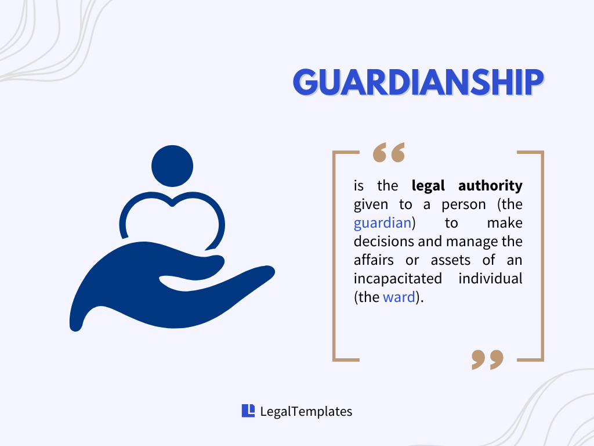
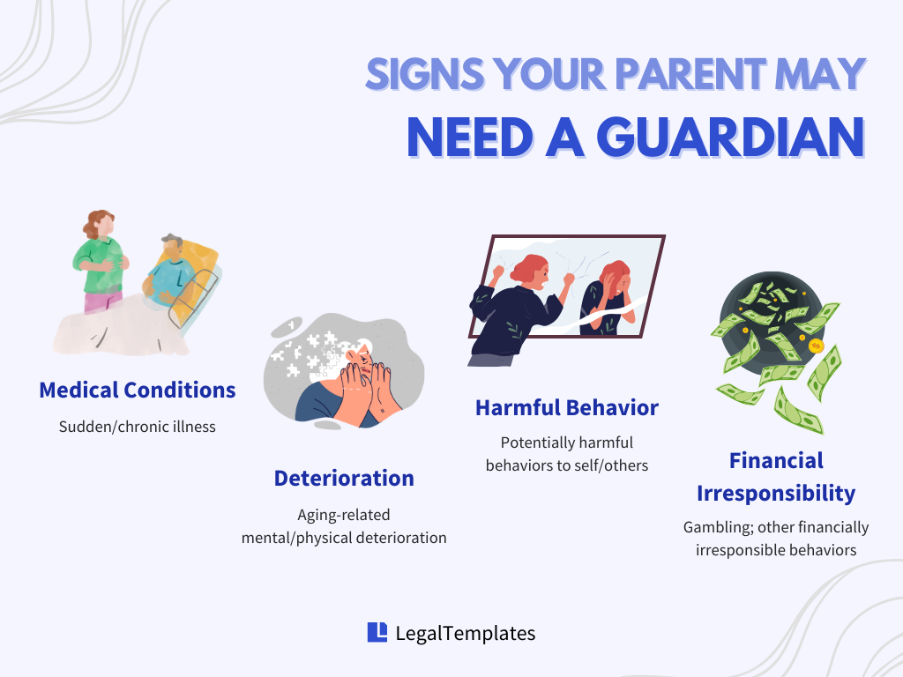
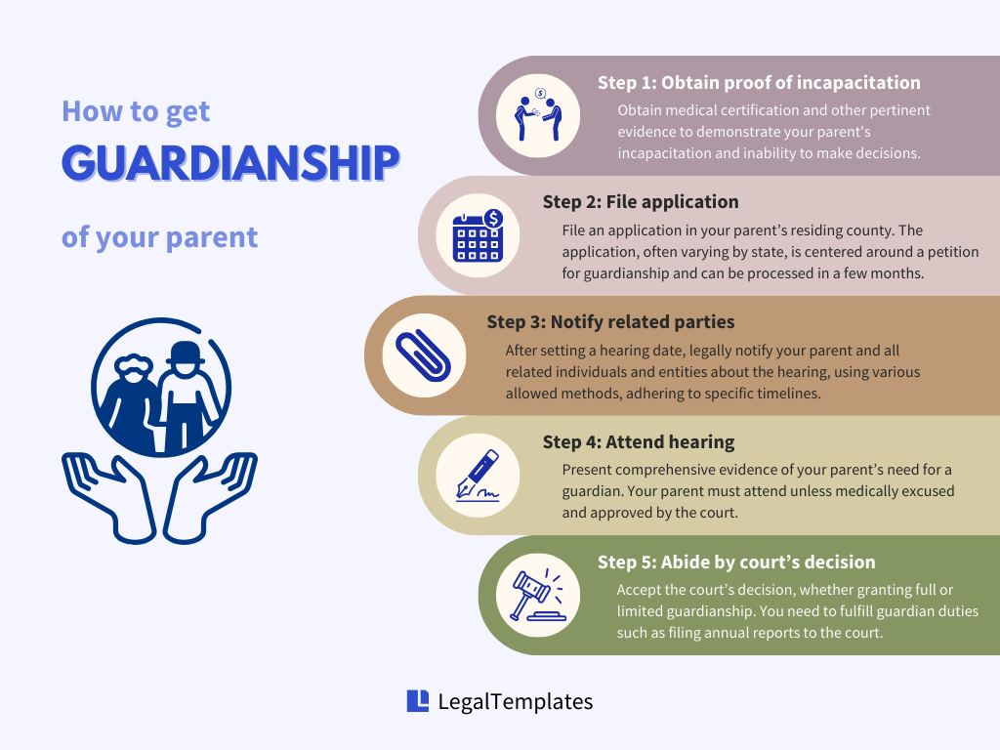

Watching an elderly parent lose their ability to think clearly is a heartbreaking experience many may face. Your loved ones may forget to pay bills, skip medications, or fail to recall their children’s names, leaving them extremely vulnerable.
In such instances, obtaining guardianship of your parent can become essential. However, guardianship is only obtainable through a court order, and the legal processes can be complex and daunting.
This article will guide you through the legal processes of becoming a guardian, allowing you to better support your loved ones in navigating their daily lives.
What Is Guardianship?

Guardianship is the legal authority given to a person (the guardian) to make decisions and manage the affairs or assets of an incapacitated individual (the ward), acting as a protective mechanism for those unable to care for themselves.
(Note: Some states use “conservator” or “conservatorship” in place of “guardian” or “guardianship.”)
Guardianship can only be obtained through a court. When a court appoints you as someone’s legal guardian, that creates a fiduciary relationship between the two of you. You are legally responsible for the ward and under legal obligation to place their best interests above your own.
Establishing guardianship removes some of the ward’s legal rights as an adult, but in some cases, it is necessary.
Does My Parent Need It?

Your parent may benefit from guardianship if they are incapable and lack capacity to fully manage their personal or financial affairs. Examples of situations can include:
- Sudden or chronic illness;
- Deterioration of mental or physical capacities due to aging or disability;
- Behaviors indicating potential harm to themselves or others;
- Behaviors demonstrating financial irresponsibility (e.g., gambling).
Remember that guardianship is quite an extreme measure as it takes away the ward’s right to make personal and financial decisions. The legal process can be lengthy, costly, and emotional. Consider it as a last resort only after you have evaluated all alternatives (e.g. power of attorney) and found no other feasible options.
Who Can Be a Guardian?
Generally speaking, the court may deem you a suitable choice as guardian of your parent if you demonstrate the following characteristics:
- You satisfy minimum legal eligibility. This means you are a competent adult of legal age (18).
- You have no criminal records. There have been no criminal convictions or pending charges (e.g. felonies, crimes of violence, crimes of fraud), which might raise concerns about your suitability.
- You are financially stable. You have not declared bankruptcy and are not insolvent, demonstrating financial responsibility.
- You have no conflict of interest. You do not have any conflicts of interest that might impair your ability to act in your parent’s best interests.
The court often prefers to appoint family members as guardians, assuming they meet the qualifications.
How to Get Guardianship of a Parent (5 Steps)

Step 1: Obtain Proof of Incapacitation
Start by having a medical examination done for your parent and obtain a medical professional’s certificate or letter. The examination should be current, meaning it needs to be conducted within a certain amount of time before the guardianship application is filed.
Medical experts must verify that your parent is incapacitated and unable to make or communicate decisions about their personal or financial affairs. Multiple opinions may be required, and a psychologist’s assessment may be involved as well if mental or behavioral issues exist.
In addition, document everything about your parent that makes you believe they lack the capacity to handle their affairs. All evidence you provide to the court must be “clear and convincing.”
Step 2: File Application
Next, file your application with the court in the county where your parent resides. Each state and county may require different documents and filing fees for a complete application. However, the core of your application is a petition for appointment of guardian.
As for application filings, some counties and states allow online applications, while others only accept applications by mail or in person. A guardianship application may take anywhere from a few weeks to a few months to be processed.
An application does not guarantee guardianship. The court will set a date for a guardianship hearing regarding your application of guardianship to determine whether your parent is in need of a guardian and whether you are the best person to serve as that guardian.
Step 3: Notify Related Parties
After the guardianship hearing date is set, you are legally obliged to notify (or, in legal terms, “serve”) your parent and all related or interested individuals and facilities entitled to attend the hearing. This can include your parent’s:
- Spouse;
- Parents;
- Children;
- Siblings;
- Grandparents;
- Grandchildren of 14 and older;
- Hospital or care facility/medicaid;
- Veteran’s agency;
- Attorney.
The purpose of service is for any related or interested parties to raise their concerns regarding the appointment of guardianship during the hearing. If you fail to notify the required parties, the court will cancel your hearing.
For “service of process,” provide a copy of your petition and other required documents. The documents can be delivered by:
- A third party by hand delivery (recipient needs to sign an affidavit of service), or
- Certified mail.
Different states may have different delivery requirements for petitions based on the recipient. Depending on the state, county, and delivery method, you must serve the documents a certain number of days (usually 10 to 20) before the hearing date.
Step 4: Attend Hearing
Both you and your parent must attend the hearing, unless your parent is specifically indicated by a physician that they are unable to and approved by the court.
At the guardianship hearing, you must present clear and convincing evidence to the court that your parent truly needs a guardian. Evidence may include:
- Proof of incapacitation, including medical reports and physician’s certificates;
- Social service reports from social workers;
- Testimonies from your sibling(s) or relatives;
- Testimonies from experts, such as doctors or psychologists;
- Financial records demonstrating mismanagement;
- Videos or photographs showing need for intervention.
Unless already represented by an attorney, the court will appoint an attorney, or an attorney ad litem, to represent your parent to act in their best interest and to do what your parent wishes. In other words, the attorney ad litem may argue against you if your parent thinks they do not need guardianship.
Additionally, anyone who attends the hearing has the right to object to your proposed guardianship. The case may go to trial if multiple individuals wish to be considered as potential guardians.
Step 5: Accept Court Decision
If the court finds that your parent needs a guardian and that you are the perfect fit, the court will grant you an appointment order. You may present the order to any facilities to prove your guardianship and execute your powers.
There are two types of guardianship the court may grant you:
-
Plenary guardianship (full guardianship). This type of guardianship gives you the power to exercise all legal rights and duties for the ward. The two main subsets include
- Guardianship of the person, which authorizes you to make day-to-day decisions including medical, housing and food, and
- Guardianship of the estate, which authorizes you to manage your parent’s assets and make financial decisions.
- Limited guardianship. Limited guardianship allows your parent to maintain certain rights while you make specific, court-detailed decisions. For instance, your parent may handle finances while you oversee medical decisions. This arrangement, subject to annual review, is suitable when comprehensive supervision isn’t necessary.
If the court deems no family member suitable as your parent’s guardian, it may appoint a professional or public guardian. Professional guardians are paid from your parent’s estate based on court-approved amounts, while public guardians are funded by government and charitable sources.
If you fail to present substantial, convincing evidence at the hearing, the court may appoint a guardian ad litem to investigate the case further. The guardian ad litem must make recommendations in your parent’s best interest so that the court can determine the best course of action for them.
What to Do After You Become the Guardian
There are usually many required forms you must submit after you are appointed guardian, such as an Acknowledgement of Duties. You must also notify your parent’s relatives that you are officially appointed as your parent’s guardian, or “Notice of Entry of Order Appointing Guardian.”
Your duties and responsibilities as a guardian may vary depending on the type of guardianship granted and the state you live in, but it can include:
- Making end-of-life decisions;
- Inventorying your parent’s assets and income;
- Paying your parent’s taxes;
- Filing annual written reports with the court;
- Attending classes regularly;
- Keeping complete and accurate records (for the court and related government agencies to review);
- Requesting the court’s approval on major decisions (e.g. selling your parent’s property).
No matter what happens, remember that the guardian is expected to advocate for the ward and support their well-being, ensuring their needs are met and their rights are protected.
What Happens to Your Parent?
As you will now be responsible for making decisions on your parent’s behalf, they will not have the same control over their life as before.
Depending on the type and scope of guardianship established, your parent may lose their right to make decisions about:
- Their living arrangements;
- Their financial matters, assets, or property;
- Medical treatment options and procedures.
Protect Your Parents
Obtaining guardianship of a parent is a complex, legal, and emotional journey. It’s crucial to consider guardianship as a last resort and understand its impact on a parent’s rights and autonomy. Always weigh it against alternatives like a power of attorney to ensure the well-being and dignity of your loved ones.
Join over 500,000 users and help your parent create their estate plans now.